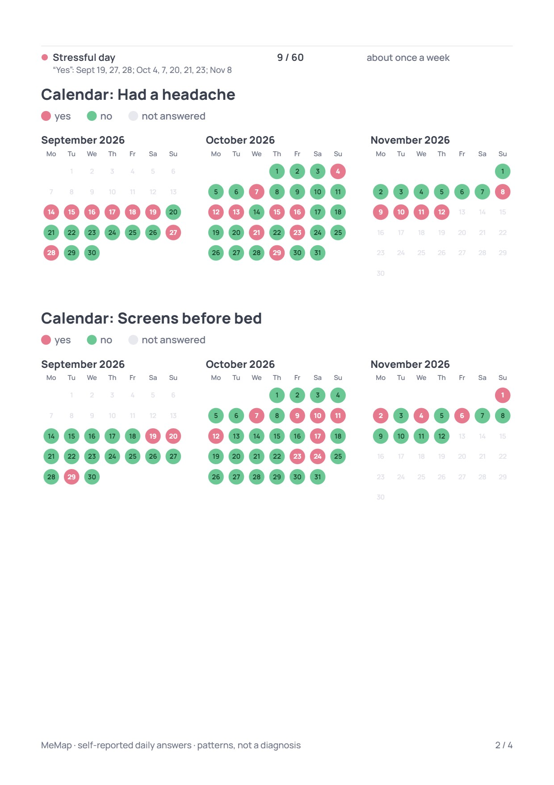

Демо «Мигрень и цикл», 60 дней, полный отчёт для врача. Слева настоящая страница отчёта сейчас, справа — как может быть.

Три календаря выбираются по числу «трудных» дней. Здесь второй — «Screens before bed», хотя к головной боли он отношения не имеет. Месячные и стресс в календари не попали: месячные — нейтральный вопрос, стресса всего 9 дней. Что совпадает с головной болью, видно только из текста в конце.
Sep 14 – Nov 12, 2026 · 22 of 60 days
Other days: a headache on 1 of 37
Looks like it’s something else: a headache as often after 7+ hours of sleep as after a short night
Отметки берутся из связей головной боли (то, что прошло проверку), не больше трёх. Вопросы без связи с темой своих календарей не получают; их дни остаются в разделе «дни точками».